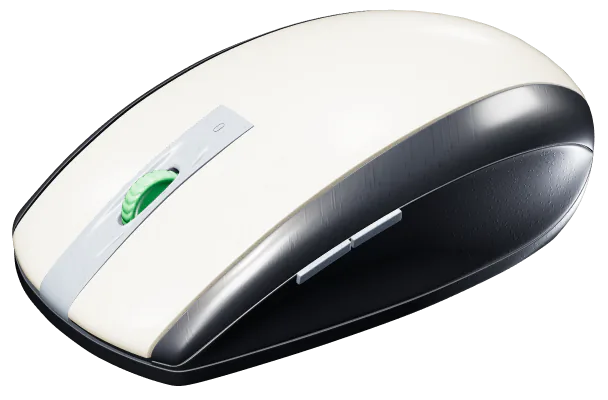
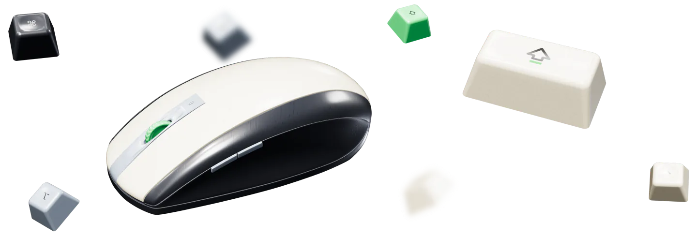
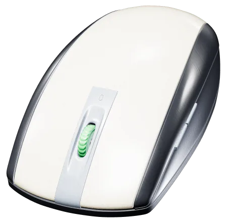
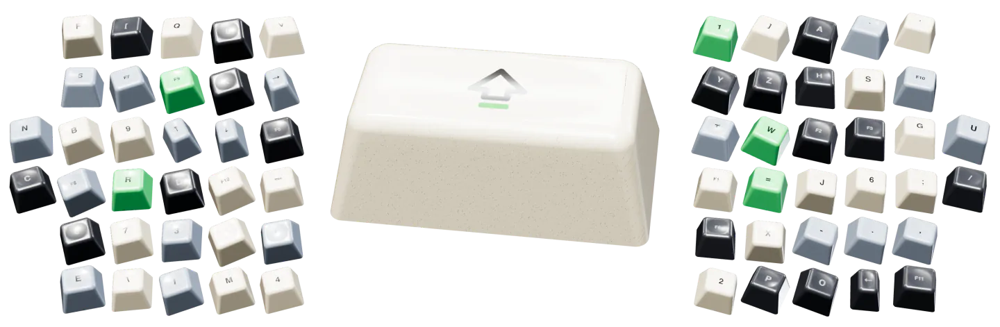

Every button on your mouse.
Press it, pick what it does.

- Right button → Hold and move to scroll
- Thumb buttons → Switch Spaces
- Wheel click → Mission Control
One small menu bar app for your mouse and keyboard. No second remapper to clash with, and no account.
Download for MacSigned and notarized by Apple 2.3 MB download macOS 27 on Apple silicon



A plain wheel
Hyperpoint
